Un reino que se cae a pedazos, un caballero que no sabe morir y una promesa que tendrás que cumplir. Para jugar solo o con amigos.
Conseguir accesoVer cómo se juegaAcceso anticipado · $1,21
En cada hoguera eliges un juramento. Te da poder, pero te quita algo a cambio. Y cuando la historia termina, lo que cumpliste y lo que rompiste decide cómo acaba todo.
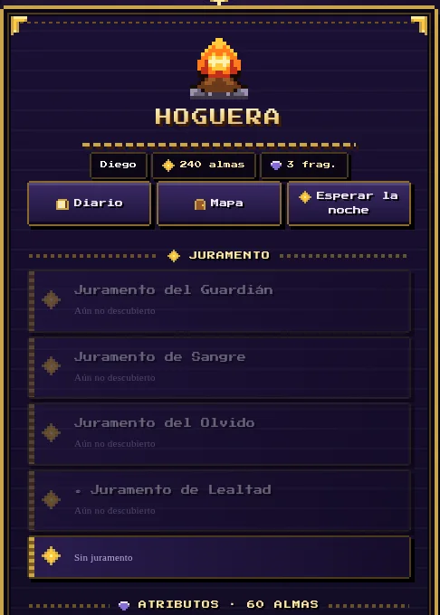
Cada enemigo tiene su ritmo. Obsérvalo, esquiva cuando toque y pega cuando se descuide. Si te lanzas con prisa, se te acaba el aguante y te lo hacen pagar.
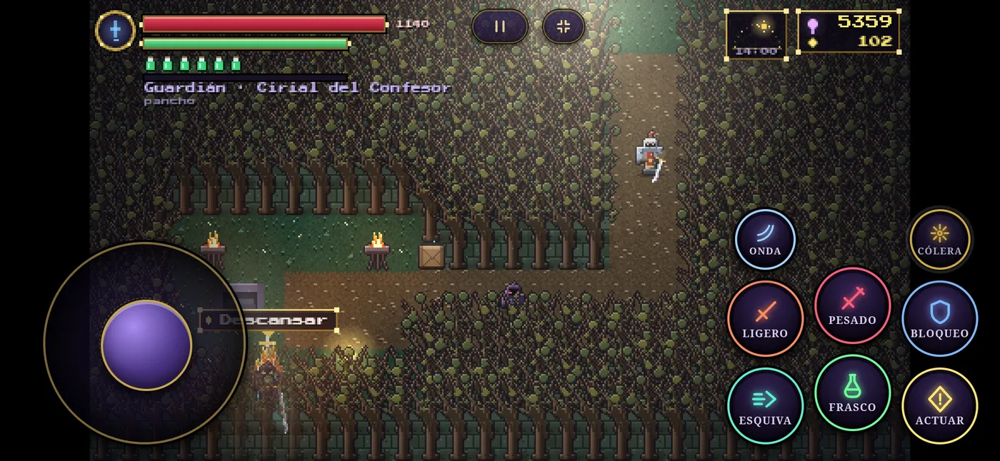
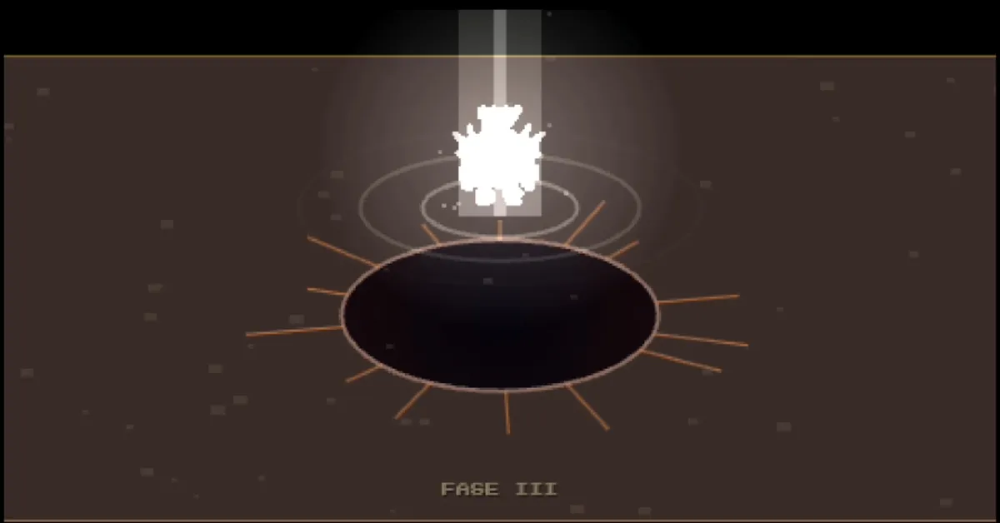
Cambian de ataques entre fases, así que lo que aprendiste al principio quizá ya no sirva. Morir es parte de aprender.
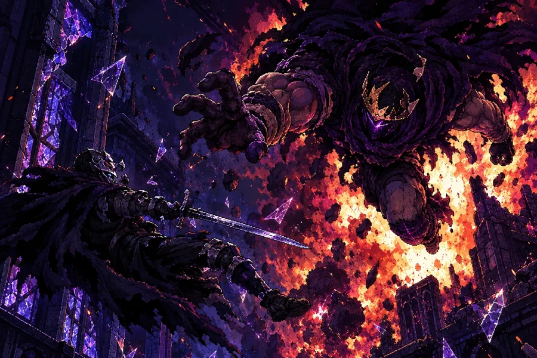
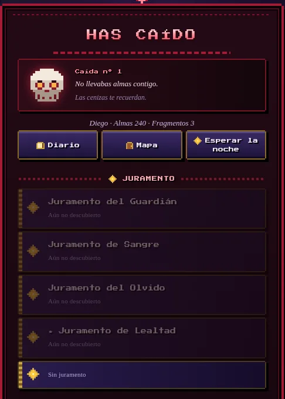
Cada derrota queda anotada y el juego te lo dice sin rodeos: “Las cenizas te recuerdan.” Vuelves a la hoguera, respiras y lo intentas otra vez.
Valdorra tiene calles, puertos, bosques y rincones que nadie te obliga a visitar. Explora con calma, que la niebla no se levanta sola.
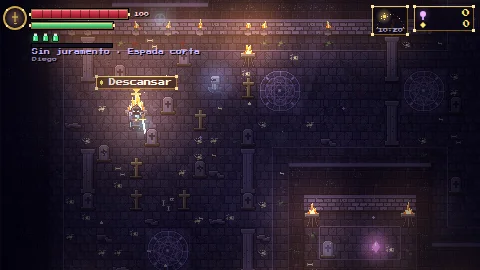
Cripta OlvidadaDonde todo empieza, entre velas y lápidas.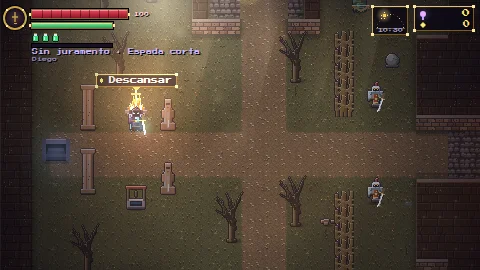
Capital de ValdorraLa ciudad vieja, con más historia que gente.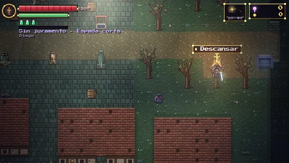
Puerto de ValdorraTejados rojos, agua oscura y barcos que ya no zarpan.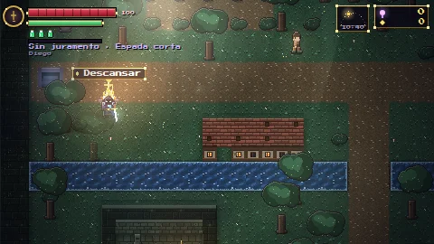
Valle SerenoUn respiro. No te acostumbres.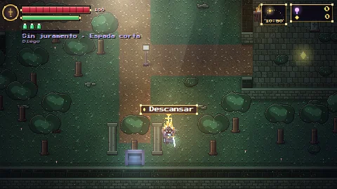
Jardín DerruidoCasi sin enemigos. Hay quien te quiere contar algo.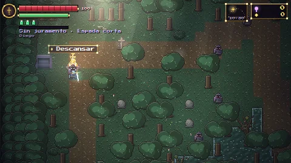
Bosque MarchitoÁrboles que han visto demasiado.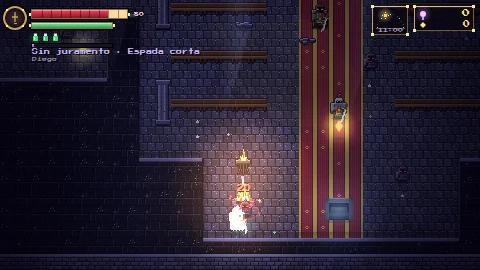
CapillaAlfombra roja, silencio y una hoguera.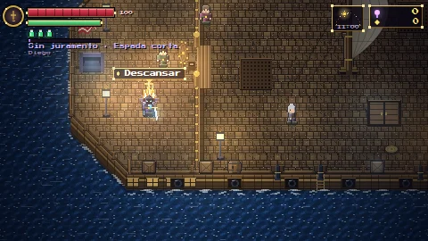
La GaviotaUn barco con secretos en cada cubierta.Si te cansaste de morir solo, trae gente. Pueden jugar hasta cuatro en la misma partida, con chat de texto y de voz para avisarse a gritos de que viene el golpe grande.
El diario guarda recuerdos, bestiario, logros y mapa. Los ajustes te dejan tocar el volumen, la sacudida de cámara y hasta el tamaño y la opacidad de los botones táctiles.
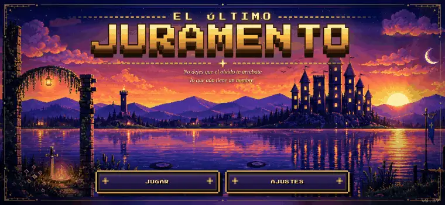
$1,21
Entras antes de la versión final. El juego ya se puede jugar de principio a fin y sigo puliéndolo, así que habrá cambios y algún error por el camino.
$1,21 y entras a jugar. Elige cómo pagar: el pago se hace en la página segura de cada servicio, no aquí, así que tus datos de tarjeta nunca pasan por esta web.
US$1,21. Puedes pagar con tu cuenta de PayPal o con tarjeta.
Si después de pagar no ves cómo entrar, escribe a .
Al terminar el pago te mostramos cómo entrar al juego.
Que juegas mientras el juego sigue en desarrollo. Puede haber errores y cambios entre versiones, y a cambio entras desde ya y ves cómo evoluciona.
En el móvil con controles táctiles (en horizontal), en el PC con teclado y en cualquier dispositivo con un mando.
Sí. El cooperativo online admite hasta cuatro jugadores, con chat de texto y de voz.
La partida se guarda sola en tu dispositivo. Si cambias de aparato, empiezas de cero.